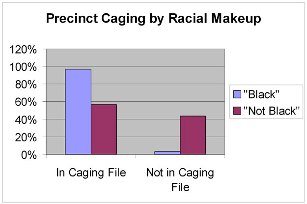
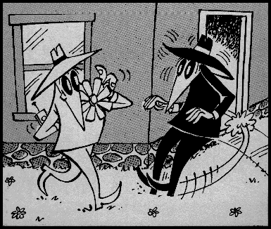

Warren D. Smith June 2007; the Center for Range Voting These are the slides for WDS lecture delivered at VoComp, Portland OR 17 July 2007.
¶ 6 (or 7?) of the 11 post-WW-II US presidents had careers crucially affected by election fraud ⇒ is one of most important factors shaping history. (& Even the perception of fraud is enough to end a country.)
¶ But USA election fraud currently seems minor compared to either gerrymandering, the inherent flaws of plurality voting system, or biased ballot-access laws, all "not" fraud. Reformers foolishly concentrating on minor issue.
¶ Computerized voting machines could yield permanent dictatorship permanently disguised as democracy. This is realistic.
¶ Computerized election fraud & related wiretapping schemes both happened.
¶ Hand counting is usually cheaper than computer vote counting. (Also machines or their lack can be used to bias.)
¶ HAVA was written by a now-imprisoned fraudster.
¶
What is "election fraud"? No clear definition...
A democratic country is like a host organism and election fraud like a parasite.
Parasites do not want to kill the host in a brief blatant orgy of gluttony.
More evolved parasites instead want to enjoy host quietly forever.
Recent election fraud trends are like that. There are a vast variety of ploys
but the common theme is inserting biases into statistics and legislating the "legality" of
the fraud when it is an easy-to-prove type.
exclude,
alter,
stuff,
spoil,
buy,
repeaters,
Myth 1: Election fraud, while perhaps important in the "bad old days," has not been important to the development of world history in the modern era (after World War II).
Reality 1: Election fraud has been one of the most important factors that has shaped world history since WW II. (Bet you didn't learn that in school.)
Proof: Of the 11 US Presidents since WW II, the careers of 6 (perhaps even 7) are known to have been crucially altered by election fraud. Since there are few or maybe no other factors which brought us a majority of US presidents post WW II, and since the US has been the most important country for world history in this era, election fraud has been one of the most important drivers of world history. Q.E.D. (details & sources)
| H. Truman | Massively-fraudulently elected MO senator 1934 (all previous "victories" also fraud; Pendergast machine). Truman began career making sure Kansas City contract $ always awarded to Pendergast graft, appointed Pendergast henchman local WPA head, and unsuccessfully tried to block appointment of reformer J.Milligan as US attorney (who then made 250+ prosecutions & convictions of Pendergast machine operatives). Pendergast tools included occasional murders, appointing only the right election judges (or fake ones), vast rolls of nonexistent registered "voters" (≈51%), and announcing totals rather than counting. |
| DD Eisenhower | |
| J.F. Kennedy | Election in 1960 over Nixon involved heavy fraud in IL & TX amounting to 100s of thousands of "votes." Employed Daley Chicago "machine", Texas "machines," and secret deals with top mobster Sam Giancana. Then appointed brother Attorney General (despite zero courtroom experience) and got him to shut down all federal election fraud investigations. (If Nixon had won IL & TX, would have presidency. Both Kennedy's IL victory definitely and his 113,000-vote national popular vote "moral victory" almost certainly, were due to fraud, but plausibly JFK would have won TX even without fraud in which case his presidential victory was "deserved.") |
| L.B. Johnson | Elected TX senator 1948 via tremendously massive and blatant fraud, numerous counties with over 99% "turnout" consisting of over 99% Johnson "votes" despite having voted 97% other way before (when the machine supported LBJ's opponent). Parr machine (paid off by Brown & Root, now Halliburton) tools included occasional murders & arson to intimidate/remove observers & opponents, fake election judges, fake counts, fake votes, poll taxes real & faked, bribed Mexican voters, mass ballot "spoilage" with optional correction aided by "Texas negative ballots." Later admitted to press by doers. |
| R.M. Nixon | Watergate scandal in which he had the 1972 Democratic Party headquarters "bugged," and also used the Internal Revenue Service to intimidate and "shake down" campaign money donors. Impeachment averted by resignation & pardon. [Also Nixon's career jumpstarted by his fraudulent behavior in Alger Hiss "communist spy" case – faked evidence – but that was not election fraud. Also there was pro-Nixon fraud in Southern IL in the IL 1960 election versus Kennedy, but it was not enough to counterbalance Chicago.] |
| GR Ford | |
| J. Carter | Only "good guy" in the fraud list; Carter career started with massive 1962 fraud against him by Hurst machine in Quitman County GA. Carter's political career would have been ended but with aid of great luck, evidence, and Atlanta Journal reporter John Pennington, was able to prove the fraud, overturn & win the election, and soon after rose to GA governor. Faked ballot box seals, "lost" ballot stubs, "lost" absentee ballots, more votes than voters, voters who were in penitentiary at the time, etc. (Only US President ever successfully to prove election fraud against him.) |
| RW Reagan |
National Security Council member & Navy Captain
Gary Sick's 1991 October Surprise
alleged that Reagan (whose 1980 running mate was former
CIA-head G.H.W.Bush, whose campaign head was
former CIA-head W.Casey, and many of whose campaign
operatives were former CIA officers including covert ones and CIA former associate director
T.Shackley, a prime mover behind the Bay of Pigs invasion; nothing comparable had ever happened
in any previous presidential campaign) had emissaries meet with
Iranian emissaries and Israelis to arrange that
|
| GHW Bush | |
| WJ Clinton | |
| G.W. Bush | Fraudulent techniques employed in FL 2000 race including faked felon's list, manipulated spoiled ballots, and manipulated absentee ballot rejections, won him presidency over A.Gore. |
Think your absentee ballot will get counted? Over 500,000 absentee ballots were rejected nationwide in 2004. After Gore contested, the absentee ballots, especially the late ones, became crucial since they were the only class that had not yet been counted. The NY Times (Front page, 15 July 2001) examined the 2490 late-arriving overseas ballots in FL 2000. They found that 680 violated state election laws and rules and hence should have been rejected. Here's how they got counted:
| In Bush-won counties: | 530 accepted, 523 rejected and hence uncounted. |
|---|---|
| In Gore-won counties: | 150 accepted, 666 rejected. |
Of the 680 uncompliant but accepted ballots 80% were in Bush counties. (Bush-Gore margin: 537.) (The NY Times also examined the 1824 flaw-free late-overseas ballots, but there was almost no bias there since only 11 were rejected.)
Myth 2: Gerrymandering and changing the voting method to (e.g.) range voting, are minor concerns. (Ballot access laws? They're so "minor," most "experts" do not even know what they are!) Getting rid of fraud and manipulation should be our top concern (and sure enough, 99% of USA election reform effort is about that). If you can't get rid of fraud, what is the point of changing gerrymandering or plurality voting?
Reality 2: Exact opposite. The numbers say gerrymandering and the plurality voting system both yield far larger distortions/removal of democracy than USA's estimated fraud levels during 1990-2010. Ballot access laws are an important factor preventing US democracy and, obviously, not being allowed on ballot at all goes far beyond any fraud in severity. (In combination with reality 1, this means these factors are perhaps the single largest influence on world history!)
Even in Ohio 2004 and Florida 2000, known fraud and manipulation methods amounted to the equivalent of reversing ≈60,000 and 15,000 votes, respectively, i.e. 1/100 and 1/400 of the votes cast. That's tiny compared to gerrymandering effects, inherent voting system flaws, and ballot access denial.
| #voters | their vote |
|---|---|
| 35 | A>B>C |
| 33 | C>B>A |
| 32 | B>C>A |
Even if all voting were 100% secure, then the USA's voting system would still be very far from "democracy." Democracy is: people express what they want as votes, and then the voting system gives it to them. Our voting system often fails that even with zero fraud. Example at right:
To compensate, voters often vote dishonestly. E.g, the B-voters might dishonestly vote for C to prevent A winning.
That "works" here (but also can fail) but the long term effect is that third-parties such as B's get killed off. Then voters effectively have only two choices – minimum possible. E.g. in 1968 & 2004 (and probably 2008), US voters got to vote for the pro-war candidate... or the other pro-war candidate, even though about 50% or more of the voters were anti-war (over 70% in 2008). In 2004 they got to vote for the pro-NAFTA, pro-WTO, pro-PATRIOT-act candidate... or the other one, even though about 50% or more of the voters were against these. And so on.
Also, in the USA there really is usually only 1 choice (i.e. zero choice) not two. (US elections are 98% predictable over 1 year ahead of time – far worse than any comparable "democracy.") The net effect is voters are simply squelched with no opportunity whatever to alter policy, but the delusion they control things. This is all "legal."
| Candidate | Plur | RV | AV |
|---|---|---|---|
| Bush(Rep) | 50.7 | 40 | 39 |
| Kerry(Dem) | 48.3 | 55 | 61 |
| Nader | 0.38 | 25 | 21 |
| Badnarik | 0.32 | 9 | 0.6 |
| Cobb | 0.10 | 5 | 2 |
| Peroutka | 0.12 | 6 | 1 |
| Calero | 0.003 | 4 | 0 |
| Total3rd | 0.92 | 49 | 25 |
Many other voting systems have been invented besides the plurality count system (one of the worst) the USA uses. Almost all of them would elect B above – but not "instant runoff" which would (unwisely, in my view) elect C. These effects are far larger:
With gerrymandering plus 2-party domination, and computer-aided redistricting just before every election (supreme court: now legal) party can remain in majority control, forever, with 26% of the vote. Is that a larger, or smaller anti-democratic effect than 5% frauded elections altered by 5% of the vote inside them?
Which matters more as a threat to democracy: 98% election predictability (greater chance of dying in office than being defeated; less turnover in US house than old Soviet politburo), or (say) 5% frauded elections altered by 5% of the vote inside them?
Here's some gerry-districts during the last 15 years. These samples collected by fairvote.org.
North Carolina – official districting versus Shortest Splitline Algorithm:
And how about the fact that the USA has a crazy quilt of ridiculously biased nonuniform ballot access laws? It is essentially impossible for a third party candidate to get on ballot in Georgia. Since 1943 it has never happened in a GA congressional race. Not once in ≈800 races. (This not about 3rd-party candidates being unable to win. This about them being unable to run at all. By law.) Which do you think has a bigger impact on GA democracy – no candidates beyond two allowed to even run, or the fact the two may have some fraud in their elections?
Myth 3: Voting machine manufacturers (and also, unfortunately, the expert M.I.Shamos in a notorious 2006 paper) commonly state that there has been no example of computerized election fraud.
Myth 4: Shamos also implied that a conspiracy of 100,000 (which would necessarily "unravel") would be required for a computerized election fraud and that tampering with only one machine could only alter a small number of votes. E.g.
Florida Secretary of State: (defending paperless touch screen voting machines, criticism=conspiracy theories) "You'd have to go machine by machine, all over the state [to rig an election]."
Reality 4: Refuted by the Princeton hackers [FeldmanHF], the Sony rootkit, the Greek phone scheme, and the Trojan-horse-in-OS scenario (known examples in microsoft OSs); even a single person can suffice to affect hundreds of thousands of machines.
Reality 3a: The 1988 election of Carlos Salinas as president of Mexico was a fraud perpetrated with the aid of both computers and a large number of human conspirators [Castaneda Chand], as was admitted in 1994 public statements by Arturo Nunez, then-director of Mexico's Federal Electoral Institute [Roberson].
Reality 3b: James H. Gundlach has presented convincing statistical evidence that computer-based fraud in Baldwin County elected Bob Riley governor of Alabama in 2002. (Future work by JHG & WDS aims to increase the confidence from about 99.99% to 99.9999%.)
Initial count showed Siegelman won. Then in Baldwin County – one of the few where all of the county officers in charge of elections were Republicans – the probate judge for elections (a Republican) corrected the tabulation, after midnight and long after poll watchers and other staff had gone, due to his conclusion that Siegelman had 6334 too many votes. Hence Riley won.
(The alteration in the absence of watchers violated Alabama law.) County officials were vague about the cause of supposed error ("lightning strike," "computer glitch").
Gundlach's hypothesis was the "correction of the error" actually consisted, basically, of simply removing about 20% of Siegelman's votes and awarding them instead to Riley, in each Baldwin precinct. This fraud, if such it was, could presumably have been detected by examining the "poll tapes" from every voting machine in the county to see what the original (as opposed to altered) data were. But attempts by Siegelman's Democrats to have such an examination failed, because Alabama's attorney general William H. Pryor took it to the Alabama supreme court to insist on the state's right not to have that data ever revealed and not to have any recount done with Democratic party or independent observers. He won the case.
All the judges (and Pryor) were either elected Republicans or appointed by Republicans.
Alabama law was later changed so that, supposedly, with the present law Pryor would not have won the case. However, this law change, being ex post facto, left the 2002 election unaffected.With these data now permanently sealed, what evidence was there for fraud? Gundlach employed this statistical idea. Predict the 2002 Riley and Siegelman votes in Alabama precincts (both in Baldwin and in other counties) from corresponding counts in other races and/or in other years. These predictions exhibit 96-98% correlations with the official vote counts in both Baldwin and the other counties but, amazingly, all of the Baldwin precincts in 2002 showed a remarkably uniform percentage drop of Siegelman votes below the predictions. This happened only for Baldwin precincts and not for precincts in other counties.
Postscript (28 June 2007): Siegelman just received 7.3 years jail for accepting $500,000 in
bribes from HealthSouth Chairman Richard Scrushy (6.9 years jail)
while serving (1999-2003) as AL governor. But the bribe
money was not actually paid to Siegelman but rather to
the "Campaign for an Education Lottery" in exchange for Scrushy getting re-appointed to
State Hospital Board (also appointed by 3 previous governors).
This seems less of a crime that the common never-prosecuted
practice of Presidents awarding Ambassadorships to big
campaign contributors... [Meanwhile Jack Abramoff in released emails reveals
how he diverted millions in Choctaw Indian lobbying money into GOP AL races using fake
Christian and Family groups...]
In a new scandal
it has now been revealed by Riley lawyer Dana Jill Simpson
in an Affadavit
that Riley aides talked about initiating this prosecution with Karl Rove
aides... she quoted Republican Op William Canary as saying to Riley's son in the 2002
conference call (phone records confirm
it existed):
"not to worry about Don Siegelman because his girls would take care of him" and he
"had already gotten it worked out with Karl and Karl had spoken with the Department of
Justice and the Department of Justice was already pursuing Don Siegelman."
(The "girls" were Canary's wife Leura and Alice Martin, both US Attorneys in Alabama.)
Post-postscript: The US district judge in the case that jailed Siegelman, Mark Fuller,
later was accused by both his wives of beating them and their chilren;
also abusing drugs and alcohol. Fuller evaded most of the legal consequences of this because
of what Retired Senior Judge Richard G. Kopf described as
"a sweet deal when prosecutors allowed him to enter some type of diversion program
that will allow him to erase his criminal conviction for beating the crap out of his
wife in a fancy hotel room while reeking with booze." Kopf advised maneuvers
to try to stop Fuller ever from hearing another case because
"given what happened in that hotel room, no one should trust his judgment
in a federal trial courtroom", but Kopf considered impeaching
him politically impossible despite numerous Alabama press and politicians from both parties
(e.g. both Alabama's senators)
calling for his impeachment and/or resignation.
As of October 2014 Fuller continues to refuse to resign nor
has he been impeached or otherwise forced off the bench.
Reality 3c: Al Gore got 16022 negative votes from precinct 216 in Volusia County Florida during 2000 Presidential election. Supposedly due to a faulty memory card and happened despite parity check bits on the memory card designed to make the probability of undetected random data alteration be at most 1/65536. Amazingly, the same memory card delivered about 4000 erroneous Bush votes and 10000 votes for the Socialist Worker's Party candidate (approximately equal to his total in the entire rest of the USA), which positive votes exactly canceled Gore's negative votes so that the total vote number came out correct. This was later shown by a CBS internal investigation to be the direct cause of television networks calling Florida for Bush, which in turn was the direct cause of Gore's concession (which Gore later retracted, and a later upload from a different memory card repaired these particular data). Only discovered by luck. Later email from Talbot Iredale, Vice President of R&D at Global/Diebold, concluded
There is always the possiblity that the 'second memory card' or 'second upload' came from an unauthorised source.Quite. [Diebold sued the Dartmouth students who released these emails, (which Diebold had accidentally posted on the web like usual) for "copyright violation," but the judge ruled in the students' favor...]
Myth 5: Hand counting is way more expensive and laborious than machine vote counting, so we can never return.
Reality 5: Hand counting is actually often cheaper than machine counting. The point is that most voting machines are rarely used (once a year?) and count few votes (500?). They have to be stored, transported, and maintained, and people have to be trained to use them. (As a businessman: would you even consider buying a machine to count 500 votes once a year)? Add up the costs of that and compare. Usually you'll find manual counting is cheaper. Unger's calculation.
Numerical Example: HAVA="Help America Vote Act" allocated $2.3 billion in federal aid to buy new voting machines. The USA counts 100 million votes per presidential election, so say it counts 150 million votes per year. Say voting machine lasts 20 years before replace. Say human counters require 30-120 seconds per vote and cost $7-12 per hour. Then the machines – even assuming this HAVA money alone would pay for every voting machine in the USA and there are zero machine transport and storage and additional human user-training costs – would cost 2-13 times as much as manual counting.
Many countries, e.g. Denmark, still use manual counting.
Myth 6: We only need to worry about lone hackers or small conspiracy teams – large conspiracies (1000s) or attackers with huge resources (world's largest corporations and governments) need not be a concern, that's just crazy conspiracy theories.
Reality 6: Corporations have in the past overthrown governments, including democratic governments, not to their liking. So have secret services like the CIA. (Known Examples: Honduras 1910, Guatemala 1953, Iran 1953, Chile 1973). Think we don't have to worry about big money and big corporations for local elections? Wrong: Wal-Mart spent over $850,000 in 2004 – and increasing about 50% per year – to influence hundreds of local US elections (typically contributing $5000 to $20,000 per local election they're interested in) [Warner]. In 2014, Chevron Corp. topped that by spending at least $3 million – unsuccessfully! – to influence local elections in Richmond CA, swamping out opposition spending by a factor of order 100. Chevron attempted to disguise the source of the money by routing it through a labryinth of other entities, and imported candidates who actually did not even live in Richmond to e.g, run for Mayor. But these efforts were exposed by journalists.
G.W. Bush is known to have successfully organized CIA agents to stuff ballot boxes in the 30 Jan 2005 Iraq election [Hersh]. Iran supposedly also was trying to fraud that election but the latter story may have been a US intelligence "plant" since a story about "tanker truck filled with ballots being caught at the Iran-Iraq border" later was shown false. Successful conspiracies of hundreds minimum (perhaps even 10,000s) frauding elections have happened throughout US and world history (Tammany, Taiwan, Ukraine...). The NSA is known to be attempting, apparently largely successfully, to wiretap and database every email from anybody to anybody & store forever. The entire Greek government was recently wiretapped (by unknown people) [PrevS07].
During the G.W.Bush administration, the Republicans had the US congress's internal email system "tapped" so GOP aides could read the emails between Democrats. This gave them a large tactical advantage in legislative battles. But supposedly once higher-up, responsible Republicans found out about this practice, they stopped it and announced to the press they were very sorry to hear this had been going on.
Similarly in Brazil in 2001, the computerized voting system used by the Brazilian government was equipped with secret trapdoors allowing some people to know what was going on, and others not, including in supposed "secret ballot" votes. This led to a scandal.
The NSA is known to be attempting, apparently largely successfully, to wiretap and database every email from anybody to anybody & store forever.
One shock from the 2004 Johns Hopkins report on Diebold voting machine code was Diebold used a single DES key (F2654hD4) to encrypt all election data. So, an attacker with access to the source or executable code (i.e. anybody on the internet since they accidentally published it...) would have the ability to modify voting and auditing records. Doug Jones warned Diebold in 1997 about their sloppy key management. Jones (CS professor at U. of Iowa & on Iowa Board of Examiners for Voting Machines and e-Voting Equipment):
[N]either the technical staff nor salespeople at Global Election Systems [purchased by Diebold in 2001] understood cryptographic security. They were happy to assert that they used the Federally approved Data Encryption Standard, but nobody seemed to understand key management, in fact, the lead programmer to whom my question was forwarded, by cell-phone, found the phrase key management to be unfamiliar and he needed explanation. On continued questioning, it became apparent that there was only one key used, company wide, for all of their voting products. The implication was that this key was hard-coded into their source code!
Threat: Suppose President ordered the NSA to fake the votes and make him permanent dictator while preserving the illusion of democracy. Or: Suppose president is part of a small cabal of rich guys that include Bill Gates.
Historically Realistic? Yes: This is one of the most, if not the historically most, common way democracies end, except that much more overt conspiracies had been used historically since the technology for this kind of thing was not available previously.
Technically Realistic? Yes!!
* In 33 of the 50 US states, the top election official is an elected partisan; plus in some other states is appointed by the governor. (It is common for voting machine companies to make large campaign contributions in these races.) This defies international norms. Examples: Katherine Harris (R, FL); Ken Blackwell (R, OH), Susan Bysiewicz (D, CT). Blackwell and Th.Jefferson supervised & counted own election (Bysiewicz on track to try same, but abandoned race).
If all else fails rig the recount or try more direct action.
Also many manipulation methods that have been declared "legal" and hence are not "fraud"; and as we've seen there are other methods beyond our top 6; and computer-based fraud methods are now possible which could be a far greater nightmare.
According to investigative reporter Seymour [Hersh], US president G.W.Bush paid former CIA agents to stuff Iraq's ballot boxes in the 30 January 2005 Iraq "election."
Over 130,000 blacks were registered to vote in Louisiana in 1896, but after adopting "Jim Crow" there were only 1342 on the rolls in 1904.
More recent version: the Florida "felons list."
Blacks in Florida in 2000 were known to be about 90% pro-Gore, as opposed to, e.g, Hispanics, who were pro-Bush. Florida excluded a list of 57,000 "felons" from voting. They were 54% black, although Florida as a whole was only 15% black. But of the 694 "felons" in Tallahassee, only 33 (5%) were actually convicted criminals. But most of Florida simply used the list without checking, whereupon Bush duly beat Gore by an official margin of 537 votes. (DBT, a company now owned by ChoicePoint of Atlanta, was paid $4.3 million to produce the list, replacing a firm that charged $5,700 per year for the same service.) The 2004 "new and corrected" felons list was kept secret, but finally exposed to public view by lawsuit on 1 July, and on 2 July the Miami Herald reported that more than 2100 names on the list actually had received clemency – and, amazingly, the list contained fewer than 0.1% Hispanics, in a state where nearly 1 in 5 is Hispanic. FL Governor Jeb Bush said that all was "an oversight and mistake."
Colorado Secretary of State Donetta Davidson, just weeks before the 2004 election, removed 6000 "felons" from the voter rolls. But there were a few problems with this step.
The GOP agreed to a 1982 court order to cease this practice. But reporter Greg Palast found it continues – the parody site georgewbush.org was emailed caging lists from RNC headquarters! (Other recipients included Rove aide Tim Griffin [griffin@rnchq.org] who later was appointed US Attorney and then later explained how he was astonished he'd been accused of having anything to do with caging and had never even heard of the concept...)
The idea is to do selective voter purges. Works best with homeless or transient (e.g. in Iraq) people. You send them postcards. If they do not reply that is "evidence" they no longer reside there. They then are purged from registration rolls and/or selectively challenged at polls. The intercepted caging list for Duval County FL was mostly blacks:
Ohio law gave county officials the optional power to purge large classes of voters from the rolls. This option was chosen highly preferentially in the most Democratic areas. E.g. 150,000 voters were purged from the rolls in (Democrat-dominated) Cincinnati for not voting in the last two federal elections within the last four years, 25% of the voters in Cleveland were purged (Cleveland went 83% for Kerry). Also 8000-10000 were purged "accidentally" by Diebold in "electronic glitch" – all in heavily Democrat areas. This by itself was easily mathematically sufficient to swing the presidency from Kerry to Bush – official margin 120K, but about 500K voters purged. (H.Wassermann: "we have no evidence of purges in Republican areas.")
Private voter-registration company "Voters Outreach of America" (paid $488,000 by the RNC) employed up to 300 part-time workers to collect hundreds of voter registrations per day in Las Vegas, NV. But, its former employees said, Voters Outreach only wanted Republican registrations. Two told George Knapp of KLAS TV they personally witnessed company supervisors rip up registration forms signed by Democrats. Employee Eric Russell managed grab some shredded forms, all signed by Democrats, from the garbage and KLAS TV took them to the Clark County Election Department and confirmed that they had not been filed with the county as required by law. Russell also left some with the FBI. Many who thought they would be able to vote on Election Day were therefore mistaken.
Voters Outreach then vanished from Nevada, leaving their landlord complaining about nonpayment of rent.
Voters Outreach also operated in Portland, Oregon under the name "America Votes," which is in fact the name of a Democratic organization. Employees in Las Vegas say they too were told that the name of the company was America Votes. "They confused us with the name. They told us one thing and told the temp force something else. They told us America Votes," Russell said.
Another "recurring classic."
The "Mighty Texas Strike Force" showed up in Ohio 2 weeks in advance, stayed at the Columbus Holiday Inn, did data mining. Paid for by Ohio Repub. Party. Phoned voters (using payphones only) and they knew who had parking & traffic tickets, who was behind on their child support, and were caught making phone calls telling people if they showed up at the polls, they would be arrested. Also calling people on probation to make the same threats. [Affadavit by hotel clerk described activities, published in Columbus Free Press.]
When Columbus Free Press contacted the Mighty Texas Strike Force, they proudly said that they were linked to the White House and Karl Rove and bragged about their role. 1500 people total in MTSF. BBC Reporter Greg Palast filmed a private detective filming every Jacksonville FL early voter (most black) from a vehicle with blacked-out windows. The private detective claimed not to know who was paying for his all-day services.
Brilliant! Blackwell, confronted with the annoying news from his offices statewide that Democrats seemed to be recruiting far more new voters in registration drives than Republicans, suddenly noticed – and realized he "had" to enforce – a long-abandoned law demanding that all voter registrations be on "white, uncoated paper of not less than 80 lb. text weight." To appreciate, need to realize 80-pound paper is the stock used for business cards. Most xerox & printing machines won't handle it. Every state I've ever been in, registration forms have been printed on normal typing/printing/xeroxing "bond" paper, which is 20-pound. And that is not merely my perception: The League of Women Voters reported that Blackwell's was the only policy of its kind in the country. So with this sudden directive on 7 September by Blackwell, Ohio's own printed forms as well as those used in all the registration drives (and forms printed in newspapers as a service to their readers) were suddenly invalidated. Delaware County posted a notice online saying it could no longer accept its own registration forms! The Columbus Dispatch reported that Blackwell's own staff distributed registration forms on lighter-weight paper illegal under his rule! Thousands of registrations rejected; everything chaos. Eventually – on 28 September, 6 days before the registration policy – Blackwell relented under threat of court action, but damage was done; no way to process all the forms in 6 days. Mission accomplished. The result, according to a postmortem study (pdf) by Norman Robbins, was between 10,000 and 100,000 missing votes or voters!
Many times, fliers have been distributed at malls, etc, instructing Republicans to vote Tuesday & Democrats Wednesday. "Recurring classic."
The Republican phone bank jamming scandal in New Hampshire was to jam Democratic phone banks. John E. Sununu (R) won the close race. Four imprisoned, including James Tobin (Northeast field director for NRSC); some guilty pleas; James Tobin made well over 100 calls to the White House Office of Political Affairs, including two dozen calls in the 3-day period when the phone jamming scheme was being executed. Mississippi Governor Haley Barbour arranged financing for, and had ownership stake in, GOP Marketplace, the company paid to carry out the phone jamming scheme. Over $6M spent by Republican party for their legal defenses.
Another "recurring classic" is annoying 3am robot calls from "candidate X" which really are from X's opponent...
Systematic manipulation at both County and Precinct levels throughout Florida 2000.
| County | Black pop. | Uncounted | – | County | Black pop. | Uncounted |
|---|---|---|---|---|---|---|
| Gadsden | 52% | 12% (top) | – | Citrus | 2% | 1/2 % |
| Madison | 42% | 7% | – | Pasco | 2% | 3% |
| Hamilton | 39% | 9% | – | Santa Rasa | 4% | 1% |
| Jackson | 26% | 7% | – | Sarasota | 4% | 2% |
Statewide avg spoilage rate=2.85%. The 19 FL precincts with highest spoilage rate: 18 majority-black. In the 8 largest FL counties: 46000 overvoted Gore ballots, 17000 overvoted Bush ballots.
Although only 11% of Floridians are black, it was claimed in a speech in Congress on 21 Sept. 2004 that over half the state's invalid ballots appear to have been cast by blacks, and indeed a report by the US Civil Rights commission estimated that over half the invalid ballots USA-wide in 2000 appear to have been cast by blacks, even though blacks are 12% of the USA population. If you were black in FL 2000, your chances of having your vote "spoiled" 10 times higher than if you were white – and that's assuming you hadn't already been purged by the felon list.
In 2004 in New Mexico, non-Anglo (Black, Mexican-American, and Native American) voters cast at least 89% of the no-choice-counted-for-President ballots despite being only about 55% of the population, i.e. an over 4× higher rate. (Supposedly 21084 NM ballots "did not indicate any choice" for US president; Bush won NM by 5988 over Kerry.)
Check this histogram [from the Netrinsics.com study] and notice the amazing anti-correlation... (Bush "won" by 537 votes)
We don't always know how. But it is known that many voting machines can be set up so that if you feed in an invalid ballot, it says "error! invalid ballot! please try again to cast a valid vote!" (if you are in a white area) or silently accepts (and silent discards) erroneous ballot (if you are in a black area). Such nonuniformity enables intentional biasing of ballot spoilage & is "legal." It is known all the voting machines in FL were set up outside Jeb Bush's office so the high-ups could make sure the settings were "correct" for each area of FL.
The first picture shows a map of New Mexico voting precincts around Albuquerque with Republican majority precincts in white. Also 19 little pictures of ghosts are drawn in every precinct that in 2004 featured more votes than voters ("ghost voters").
The second picture shows voting precincts in the area around Cleveland Ohio, with a greyscale plot so you can see which precincts had which percentage of votes uncounted ("spoiled ballots"). Beside it you see another greyscale plot showing percentage of blacks in the populations in those precincts.
Ohio 2004: Of the 82 precincts for which voters reported that one or more voting machines were not working, the vast majority were in neighborhoods where over 75% of the population were black; non-working machines were reported in only five precincts where less than 5% of the population were black.
Walter Mebane study compared voters per machine in Franklin County precincts during the primary and later real election:
| Proportion Black | November | June | Turnout reduced |
|---|---|---|---|
| "Low" | 213 | 178 | 1.5% |
| "Medium" | 226 | 172 | |
| "High" | 242 | 176 | 4% |
| – | 14% biased | unbiased |
Also useful to bias: optional precinct boundary re-drawing, polling-place changing...
Gumbel [p88] mentions the (intercepted and published) 1888 letter from Republican National Committee treasurer Col. William W. "two dollar" Dudley to an operative in Indiana authorizing him to finance "floaters" (repeater voters) to travel up and down the state in blocks of five to get a 10,000-vote plurality. (Dudley escaped trial on a technicality after he threatened to expose entire inside workings of the RNC in court.)
Quote from Dudley's letter: Your committee will certainly receive from chairman Huston the assistance necessary to hold our floaters and doubtful voters... divide the floaters into blocks of five, and put a trusted man, with the necessary funds, in charge of those five, and make him responsible that none get away, and that all will vote our ticket. [New York Times 3 Nov. 1888, page 1.]
One approach to try to stop that would be requiring voters to provide identification. However, that can engender fraud [Chai]: In the early 1990s Taiwanese politicians would buy ID cards from voters for about $US100, thus preventing them from voting later (and also perhaps also allowing falsely voting as that voter). Also, by charging money for the right kind of ID, or making it difficult to obtain for, e.g. disabled people, you can bias elections against poorer voters, or disabled ones, or ones afraid of government IDs. To have a valid birth certificate or a passport, which only 25-27% of citizens have, is something that not a lot of people can do and suitable ID can cost about $50.
Another issue: Most "Jim Crow" laws were not explicitly anti-Black. Instead they were, e.g, "literacy tests." However, the decision as to who was "literate" was left up to the examiner, and in practice all examiners were appointed by one party and not the other, allowing them to discriminate hugely totally legally, which oddly enough enabled that party to remain in power and found that 99% of Blacks were illiterate. Requiring IDs could re-open the door to such maneuvers.
The Libertarian and Green parties – not the Democrats – filed for a recount of the Bush v Kerry Ohio 2004 race. Then Bush still won with only small alterations. But both claimed that the "recount" they got was wholy inadequate and illegal under Ohio law – a contention later supported by a special prosecutor and then the jury's convictions. Pre-arranged nonrandom precincts were picked for the recount.
So far, the Greens and Libertarians have not gotten a second (in their view genuine) recount...
More directly, US presidents are also known to have used the CIA to overthrow democratic governments whose elected leaders were not to their liking, for example "Operation AJAX" overthrowing Iran's Prime Minister Dr. Mohammad Mossadeq to install Shah Mohammed Pahlevi in 1953, who then commenced a reign of terror lacking 26 years ; and the CIA's "Operation SUCCESS" which overthrew Social Democratic President Jacobo Arbenz Guzman in Guatemala [Cullather WiseR] at about the same time to commence a 42-year period of military rule during which ≈200,000 were killed by death squads.
Taiwan was under single-party KMT control for many years but the KMT found it convenient (e.g. for public relations in the USA) to pretend to have a democracy. Their solution was massive vote buying fueled by government-scale financial resources. This became clear in the 1990s when the KMT began to lose both political and media control. E.g. [WuH] during the 1990-1999 decade in nine counties in Southwest Taiwan, there were 5091 trials of defendants for vote-buying (over 4200 convicted) in local courts, plus 1158 trials in high courts (1137 guilty), for a sustained rate of slightly under 1 vote-buying conviction per day. Approximately one-quarter [EFT] of all Taiwanese registered voters received "gifts" from the candidates each election in the early 1990s.
Mining, banking, and railroad magnate William Andrews Clark famously got elected as the US senator from Montana (1899) by simply bribing over half the members of the Montana legislature to declare him senator [Malone] and expunge the old senator!
More recently, "absentee" and "postal" ballots (now the majority of votes in Oregon and Washington States) have enabled both vote-buying and vote-fabrication fraud. Miami Mayor Xavier Suarez's 1997 election depended on a 2:1 lead in about 5000 absentee ballots. It was annulled by the courts as the product of a "massive, well-conceived and well orchestrated absentee ballot fraud scheme." One of the absentee ballots was signed by Manuel Yip (died 1993) and witnessed by an aide to the City Commission Chair; others had forged signatures or were cast by nonresidents. City Commissioner Humberto Hernandez was also indicted on 23 counts of mortgage and medicare fraud, money laundering, fabricating evidence, etc. Over 100 absentee ballots were found in a raid on the home of Suarez's ally, political boss Alberto Russi, 92 of whose friends voted absentee.
Saltman discusses various technical means introduced in the USA during 1860-1890 – such as glass-walled ballot boxes and ballot boxes equipped with input-counters – to try to stop ballot box stuffing and ballot boxes with false bottoms and hidden compartments. He quoted [McCormick p.159-162] about how a special committee of the NJ state legislature found in 1883 that "a large proportion of... the voting population depended upon election day [vote buying] as a regular source of income" and how "ward workers were given stacks of money at the same time they picked up stacks of ballots..."; the number of bribable voters statewide was estimated to be 50,000 out of 270,000 votes cast for governor that year. Gumbel [p.117-118] notes that a 1902 Ohio judge found 26% of Adams County voters sold votes routinely and 85% at some point in their lives.
was a method favored by Tammany. Testimony from Tammany's leader William Marcy "Boss" Tweed (quoted [Gumbel p.86-87]) explained they would just "count ballots in bulk" and decide counts ahead of time. Such count-alteration is not possible (at least unaccompanied by other efforts) if the ballots are made publicly inspectable. It works best once a political "machine" gains so much control of the electoral machinery that they can simply evict all inspectors, observers, judges, etc they do not favor, then produce whatever "counts" they want.
An attack on paper-based voting systems (known by other names, e.g. "the caterpillar" in other parts of world; has been observed in several), a buyer hands a voter a pre-marked ballot. She casts it as "her" vote, then gives the blank ballot she should have used to the vote-buyer, who views it as proof she obeyed instructions & pays her (and cycle begins anew).
Usual remedy: numbered tear-off stubs on ballots to assure you use the one you are officially given.
According to D.J.Solinger, reduction of election fraud through better technology and procedures was crucial for the conversions of Mexico [Castaneda Chand] S.Korea, and Taiwan from pseudo-democratic single-party rule to more genuine democracy.
Not only has election fraud altered history, changed governments, and caused the death of thousands, even the mere perception of election fraud can suffice.
After a court ordered Prime Minister Indira Gandhi removed from office because she was elected with the aid of fraud, Gandhi (1975) responded by refusing to step down, jailing thousands of both her political rivals and journalists she disliked, dissolving many state governments, cutting off electricity to opposition media, and terminating Indian democracy in favor of rule by decree. Fortunately the resulting period of authoritarian rule only lasted 19 months. Costa Rica's 1948 civil war was triggered by allegations of election fraud and with the sitting government refusing to accept the election result. Although both these examples ended comparatively happily, that was not the case in Nigeria where this same scenario in 1965 led to a civil war followed by military rule interspersed with brief periods of pseudo-democracy for the next 34 years.
Princeton researchers recently announced [FeldmanHF] that the Diebold AccuVote-TS computerized voting machine ("[together with] its newer relative the AccuVote-TSx... the most widely deployed electronic voting platform in the United States") could be infected with a virus in 1 minute which would then spread to other machines via data card, where it could then change election results, and/or erase itself and all trace of itself from all logs. In many locations in the USA it is common for election workers to take voting machines home with them overnight, hence one minute's access by one corrupt individual is hardly an unrealistic possibility.
It also was recently shown [Berkeley] that Diebold "GEMS tabulator" totals could be altered in 30 seconds, by somebody with no computer expertise, writing no program, with no password, and with no record in GEMS's extensive logs. This because GEMS, idiotically, stores all data in unencrypted form, unprotected by any kind of hash, in the same format as Microsoft Access. The fact GEMS requires passwords and keeps logs is then irrelevant.
Many voting machines run, e.g, Microsoft Windows operating system, an enormous piece of software written by thousands, many of whom are foreign nationals, and whose code is both secret and known to contain a very large number of "bugs." If, say, some country's secret service wished to insert their own "Trojan horse" code inside, say, some graphics library routine, it is difficult to see what would stop them, after which point almost every Microsoft Windows computer would become easily subverted by that government, or, for that matter, by Microsoft Corporation leadership. Microsoft is known to have hacked their own operating system to
"In Short" column, page 88, Information Week 22 May 1995: Microsoft officials confirm that beta versions of Windows 95 include a small viral routine called Registration Wizard. It interrogates every system on a network gathering intelligence on what software is being run on which machine. It then creates a complete listing of both Microsoft's and competitors' products by machine, which it reports to Microsoft when customers sign up for Microsoft's Network Services, due for launch later this year.
Packet sniffers have shown: When you try out the free demo time on Microsoft.net, it silently transmits your entire directory structure in background.
But, even if the source code were examined – which US voting machine companies have prevented government inspectors from doing by lawsuit [e.g Gumbel p.227-8] – then the subversions still could be made completely invisible by Ken Thompson's "trojan horse" techniques [ThompsonK].
Some politicians own or are closely connected to the companies that manufacture the voting machines that (in significant part) elected them. For example Nebraska's Sen. Chuck Hagel was the head of the company (American Information Systems) that owned ES&S, which installed, programmed, and largely ran the voting machines used by 80% of the citizens of Nebraska to elect Hagel in what the Washington Post called the biggest upset of that (1996) election cycle. The brother-in-law of Mexico's recently elected president Felipe Calderon was paid to write the vote-counting software; Diebold Corp.'s president Wally O'Dell famously raised $600,000 for vice president Dick Cheney at a party, stayed at President Bush's ranch in Crawford Texas, and in a letter noted that he was "committed to helping Ohio deliver its electoral votes to the president next year."
Sony Corp. in 2005 secretly distributed "rootkit spyware" on music CDs which replaced standard Microsoft system calls with its own shadow routines, cloaked its presence and operations, and which caused your computer, without your consent or knowledge, to send information about you to Sony [Krebs]. It also, in Sony's words, included "a feature that may make a user's computer susceptible to a virus written specifically to target the software." (Trying to remove it destroyed the functionality of the computer's CD player.) Sony then (in response to outcry) distributed software to "remove" the rootkit – but it actually did not remove it! The Sony rootkit was later found on US Department of Defense computers and was estimated to have infected 500,000. Sony later settled numerous lawsuits.
The Greek cellphone caper: Persons unknown tapped the phones of apparently essentially all high members of the Greek government and their families by hacking Vodaphone Greece company computers to abuse their built-in wiretapping capability. Eventually exposed by accident when an update of the hacked version of the software contained a bug that destroyed text messaging. Vodaphone electrical engineer Costas Tslikidis then was found hanged in his Athens apartment in March 2005. (Suicide?)
A January 2004 special election in Broward County, Florida, with only one contest on ballot, had 134 votes for "nothing" out of 10,844 cast. (ES&S=Election Systems & Software paperless touch screen voting machines). Winner won by 12 votes. No way to tell what happened to the 134 missing votes.
Primary author of HAVA was Rep. Bob Ney, the GOP chairman of U.S. House Administration Committee. Ney had close ties to lobbyist Jack Abramoff, whose firm received at least $275,000 from Diebold to lobby for its touch-screen machines and (allegedly) against any paper-trail requirement in HAVA. Ney's former chief of staff, David DiStefano, also worked as a registered lobbyist for Diebold, receiving at least $180,000 from the firm to lobby for HAVA and "other election reform issues." Ney accepted campaign contributions from DiStefano and Diebold's then-CEO O'Dell was among his constituents.
Ney also made sure that Diebold and other companies would not be required to equip their machines with printers to provide paper records that could be verified by voters. HAVA pressures every precinct to provide at least one voting device that has no paper trail – supposedly so that vision-impaired citizens can vote secretly. The provision was backed by two little-known advocacy groups: the "National Federation of the Blind," which accepted $1 million from Diebold to build a new research institute, and the "American Association of People with Disabilities," which pocketed at least $26,000 from voting-machine companies. The NFB maintained that a paper voting receipt would jeopardize its members' civil rights – a position not shared by other blind-advocacy groups.
Ney & Abramoff later were imprisoned on corruption charges. When 212 congressmen from both parties sponsored a bill to mandate a paper trail for all votes, Ney used his position as chairman to prevent the measure from even getting a hearing.
Istvan S. N. Berkeley, Ph.D.: Some Specific Concerns About The November 2nd 2004 Election, http://www.ucs.ull.edu/~isb9112/election/.
Nationwide data gathered by Harvard Law School Civil Rights Project again indicate that, of the 2 million ballots spoiled in a typical presidential election, about half are cast by minority voters. Cleveland State University Professor Mark Salling analyzed ballots thrown into Ohio's electoral garbage can in 2004. Salling found that, "overwhelmingly," the voided votes come from African-American precincts. Cornell University professor Walter Mebane Jr. analysed ballot-level data from the NORC Florida ballots project and ballot-image files, and concluded that "overvoted ballots in the 2000 presidential election in Florida included more than 50,000 votes that were intended to go to either Bush or Gore but instead were discarded. The primary reason for this was defective election administration in the state, especially the failure to use systems that warn the voter when there are too many marks on the ballot and allow the voter to make corrections. If the best type of vote tabulation system used in the state in 2000 – precinct-tabulated optical scan ballots – had been used statewide then [due to inequities in the distribution of voting machines & settings of those machines] Gore would have won by more than 30,000 votes." W.Mebane Jr.: The Wrong Man is President! Overvotes in the 2000 Presidential Election in Florida, Perspectives on Politics 2,3 (September 2004) 525-535.
Brennan Center For Justice Task Force on Voting System Security (Lawrence Norden, Chair): The Machinery Of Democracy: Protecting Elections in an Electronic World, Brennan Center for Justice 2006. http://www.brennancenter.org/programs/dem_vr_hava_machineryofdemocracy.html.
Tracy Campbell: Deliver the vote : a history of election fraud, an American political tradition 1742-2004, Carroll & Graf Publishers, New York 2005.
Robert A. Caro: Means of Ascent (The Years of Lyndon Johnson, Volume 2) Alfred A. Knopf; Vintage (reprint edition 1991).
Jorge G. Castaneda: Perpetuating power: how Mexican presidents were chosen, New Press 2000 (translated by Padraic Arthur Smithies).
Trong R. Chai PhD: Testimony before US Congress, 2 Oct. 1992, pages E2927-E2928 of Congressional Record.
Vikram K. Chand: Mexico's political awakening, Univ. of Notre Dame Press 2001.
Two secret histories of the Guatemala/SUCCESS affair by CIA historian Nicholas Cullather were later declassified and appeared on the online "National Security Archives" of George Washington University. This operation was undertaken at the behest of the United Fruit Company.
Election Fraud in Taiwan, Taiwan National Academy of Arts and Sciences 1992.
Ariel J. Feldman, J. Alex Halderman, Edward W. Felten: Security Analysis of the Diebold AccuVote-TS Voting Machine.
Andrew Gumbel: Steal This Vote, Nation Books 2005.
James H. Gundlach: A statistical analysis of possible electronic ballot box stuffing: The case of Baldwin county Alabama Governor's race in 2002, http://www.auburn.edu/~gundljh/Baldwin.pdf (Paper Presented at Annual Meeting of Alabama Political Science Association, Troy AL, 11 April 2003.) Updated version of the paper (Presented at the Jacksonville AL 2 April 2005 meeting): Baldwin2.pdf
Seymour Hersh: Did Washington try to manipulate Iraq's election? The New Yorker (25 June 2005). http://www.newyorker.com/printables/fact/050725fa_fact.
Douglas W. Jones: Chain Voting, 26 Aug 2005 http://vote.nist.gov/threats/papers/ChainVoting.pdf.
George Knapp: Voter Registrations Possibly Trashed, KLAS TV, Tuesday 12 Oct. 2004. http://www.klas-tv.com
Brian Krebs: Study of Sony Anti-Piracy Software Triggers Uproar, Washington Post 2 Nov. 2005.
Michael P. Malone: The Battle for Butte: Mining and Politics on the Northern Frontier 1864-1906, Univ. of Washington press (1st ed. 1981; there also is a 2nd ed. 2006).
Richard P. McCormick: The History of Voting in New Jersey: A Study of the Development of Election Machinery, 1664-1911, Rutgers University Press 1953 (studies in history \#8) New Brunswick, New Jersey.
Walter R. Mebane Jr: Voting Machine Allocation in Franklin County, Ohio, 2004, http://macht.arts.cornell.edu/wrm1/franklin2.pdf>
Greg Palast: The Best Democracy Money Can Buy: The Truth About Corporate Cons, Globalization and High-Finance Fraudsters Penguin 2003. (Paperback best seller by superb investigative reporter. Highly educational and myth-busting.) ISBN=1841197149.
Kevin Phillips: American Dynasty, Viking 2004.
Vassilis Prevelakis & Diomidis Spinellis: The Athens Affair, IEEE Spectrum July 2007, http://www.spectrum.ieee.org/print/5280.
Tod Robberson: 88 Ballot still at issue as Mexican election nears, Washington Post (27 July 1994) A19:3.
Roy G. Saltman: The History and Politics of Voting Technology: In Quest of Integrity and Public Confidence, Palgrave Macmillan 2006.
Frederic C. Schaffer (editor and part-author): Elections for sale: the causes and consequences of vote buying, Boulder CO, Lynne Rienner Publishers, 2006.
Dorothy J. Solinger: Ending one-party dominance: Korea, Taiwan, Mexico, J. Democracy 12,1 (Jan. 2001) 30-42.
New York Times articles on the Shah of Iran's coup include: 29 May 1997 "The CIA destroyed files on 1953 Iran coup d'etat" 16 April 2000 "The CIA in Iran" 18 June 2000 "Overthrow of premier Mossadeq of Iran." The NY Times has made this material available electronically at http://www.nytimes.com/library/world/mideast/041600iran-cia-index.html. These articles were mostly or entirely by James Risen and were based on the 200-page CIA Clandestine Service History, `"Overthrow of Premier Mossadeq of Iran, November 1952-August 1953," by Dr. Donald Wilber in March 1954. The entirety of Wilber's report has since been declassified and is now electronically available at http://www2.gwu.edu/~nsarchiv/NSAEBB/NSAEBB28/index.html. The Iran coup was undertaken by the USA's CIA and Britain's SIS at the behest of the Anglo-Iranian Oil Company, and the chief CIA agent in charge, Kermit Roosevelt, was awarded the US's national security medal for his role.
Gary Sick: October Surprise, America's Hostages in Iran and the Election of Ronald Reagan. New York: Random House 1991.
Ken Thompson: Reflections on Trusting Trust, Communications of the ACM 27,8 (August 1984) 761-763.
James Wallace & Jim Erickson: Hard Drive: Bill Gates and the Making of the Microsoft Empire (unauthorized Gates biography) HarperBusiness 1993.
Melanie Warner: With Business Leading a Push, Liquor Comes to Dry Bible Belt NY Times 12 August 2006, Business/Financial Desk A1(2).
David Wise & Thomas B. Ross: The Invisible Government, Random House NY 1964.
Chung-li Wu & Chi Huang: Politics and Judiciary: verdicts on vote-buying litigation in Taiwan, Asian Survey 44,5 (Sep-Oct 2004) 755-770.